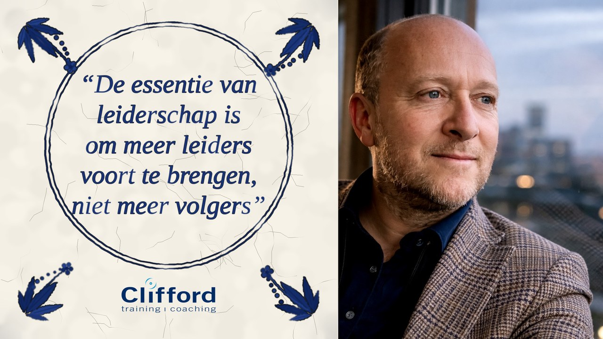
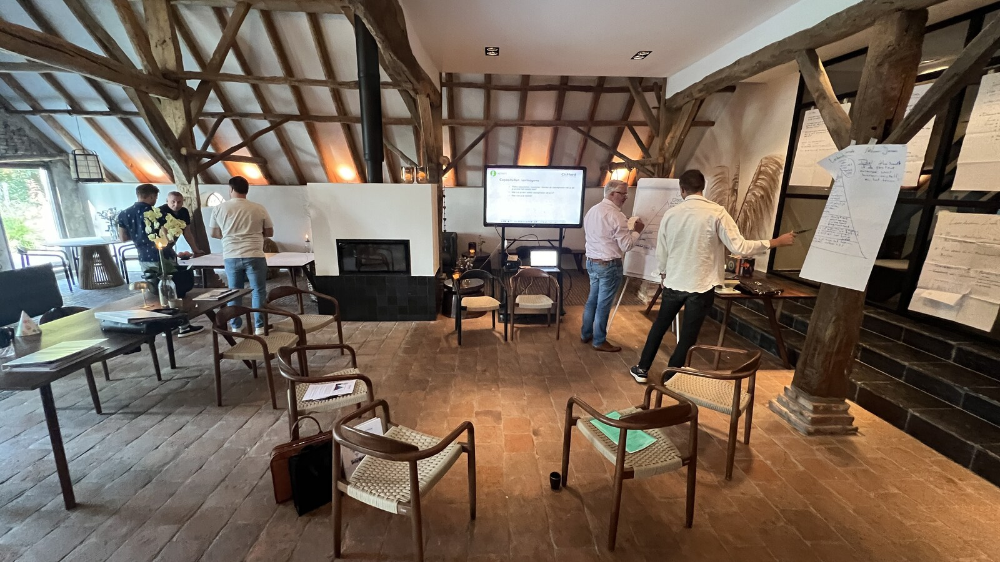

De essentie van leiderschap: maak leiders, geen volgers
80 procent van de organisaties twijfelt aan de eigen leiderschapspijplijn. Waarom de beste leiders nieuwe leiders voortbrengen, geen volgers.
Lees het artikel →Artikelen waarin ik mijn 22 jaar praktijkervaring combineer met internationaal onderzoek. Voor leiders die willen verdiepen voorbij de standaard managementliteratuur.

80 procent van de organisaties twijfelt aan de eigen leiderschapspijplijn. Waarom de beste leiders nieuwe leiders voortbrengen, geen volgers.
Lees het artikel →
Elke leider staat voor dezelfde keuze: de kortstondige pijn van discipline, of de blijvende pijn van spijt.
Lees het artikel →
Autonomie is geen luxe maar een hefboom. Van Buurtzorg tot Netflix: hoe leiders vrijheid geven binnen kaders.
Lees het artikel →
Projecten met een sterke stakeholderstrategie slagen voor 78 procent. Vier pijlers waar succesvolle leiders op sturen.
Lees het artikel →
Onze onbewuste mentale beelden bepalen onze relaties voor 100 procent. Hoe we die ruimtes opnieuw kunnen inrichten.
Lees het artikel →Nieuwe artikelen verschijnen elke twee tot vier weken. Volg Dave op LinkedIn voor notificaties en achtergrondgesprekken.
Volg op LinkedIn →